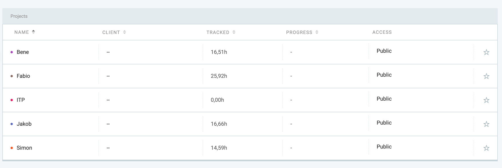
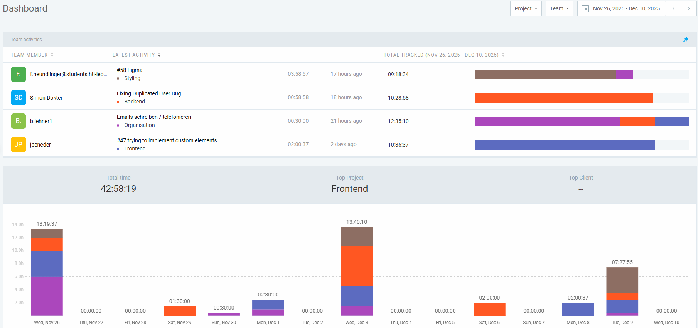
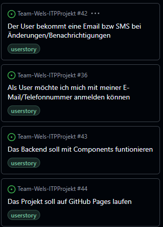
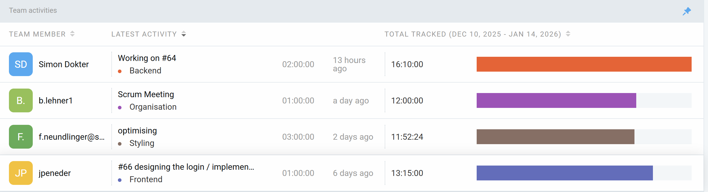
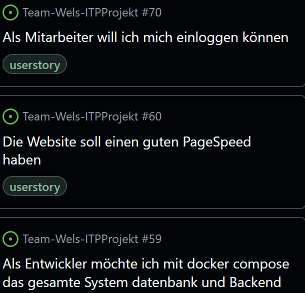

Team Wels
Bürgerbeteiligungs-System
Projektpräsentation – Benedikt Lehner, Simon Dokter, Jakob Peneder, Fabio Neundlinger
Projektinformationen
Unser Ziel ist es, ein modernes, digitales Bürgerbeteiligungssystem für die Stadt Wels zu entwickeln, das Kommunikation, Transparenz und Mitgestaltung stärkt.
- Projektstart: 2025
- Technologien: Web-Frontend, REST API, Datenbank, Admin-Interface
- Zielgruppe: Bürgerinnen und Bürger der Stadt Wels
Im folgenden Teil wird das Systemdesign und die Funktionalität vorgestellt.
Bürgerbeteiligungs-System
Ein digitales Portal für Feedback, Vorschläge und Anliegen der Bürgerinnen und Bürger – transparent, einfach und effizient.
Was macht "Team Wels" aus?
💬 Unkompliziertes Feedback
Feedback kann einfach und schnell über das System hochgeladen werden. Alles ist übersichtlich und benutzerfreundlich gestaltet.
🔔 Aktive Rückmeldung
Bürgerinnen und Bürger erhalten regelmäßige Updates über den Status ihres Anliegens – ganz transparent.
📰 News Page
Eine zentrale Übersicht zeigt alle Fortschritte, Meilensteine und neue Entwicklungen im System.
Meldesystem
- User lädt Text oder Bild hoch
- User gibt optional Kontaktdaten für Benachrichtigungen an
- Benutzer erhalten regelmäßige Fortschritts-Updates
- Abgeschlossene Meldungen werden im öffentlichen Feed geteilt
Unsere Ziele
Bürgervertrauen stärken
Allen, die ein Anliegen haben, Aufmerksamkeit schenken und Transparenz schaffen.
Probleme lösen
Alle Beschwerden und Vorschläge effizient bearbeiten und umsetzen.
Daten sammeln
Mit Datenanalyse Trends erkennen und die Stadtentwicklung verbessern.
ProjektAntrag

Kurze Beschreibung des Projektantrags.
Sprint Review #1
12.11.2025
Verwendete Userstorys

Frontend

Backend

Organisatorisch

Sprint Review #2
26.11.2025

Verwendete Userstorys

Frontend

Backend

Sonstiges

Sprint Review #1
12.11.2025
Verwendete Userstorys
Frontend

Backend

Organisatorisch
Besprechung mit der Stadt Wels und Prof. Hammer
Meeting mit IT-Wels 7.1.26
Authentifizierung
Kontaktdaten verpflichtend angeben, kein ID-Austria
Benachrichtigungen
E-Mail oder SMS Benachrichtigungen über Fortschritte
Ablauf des Prozesses

Sprint Review #4
12.11.2025
Verwendete Userstorys
Fortschritt

Sprint Review #5
26.11.2025

Verwendete Userstorys

Fortschritt